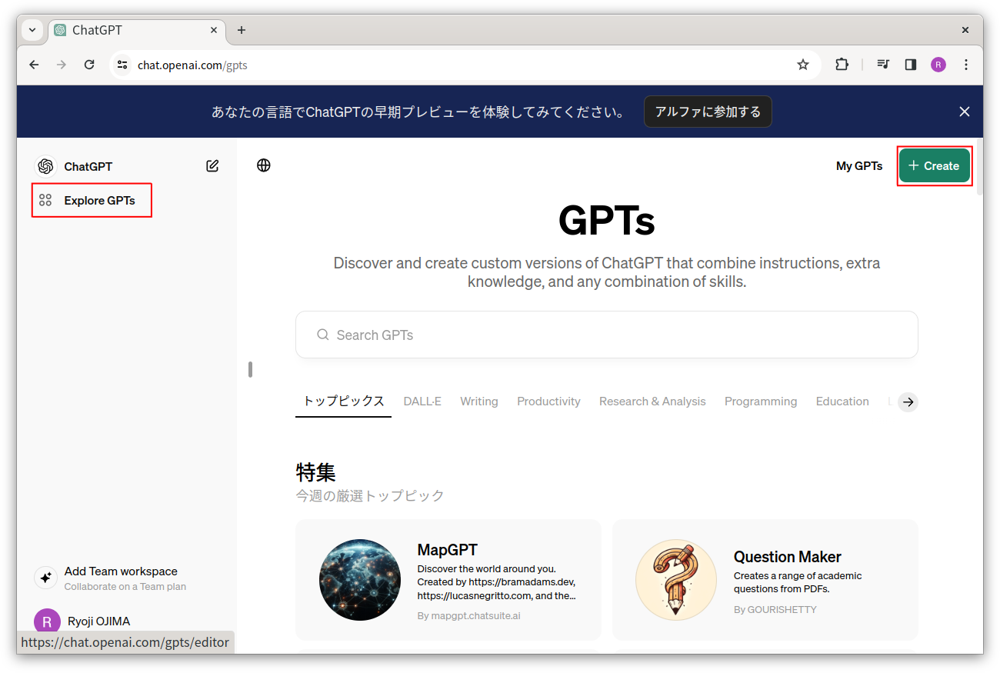
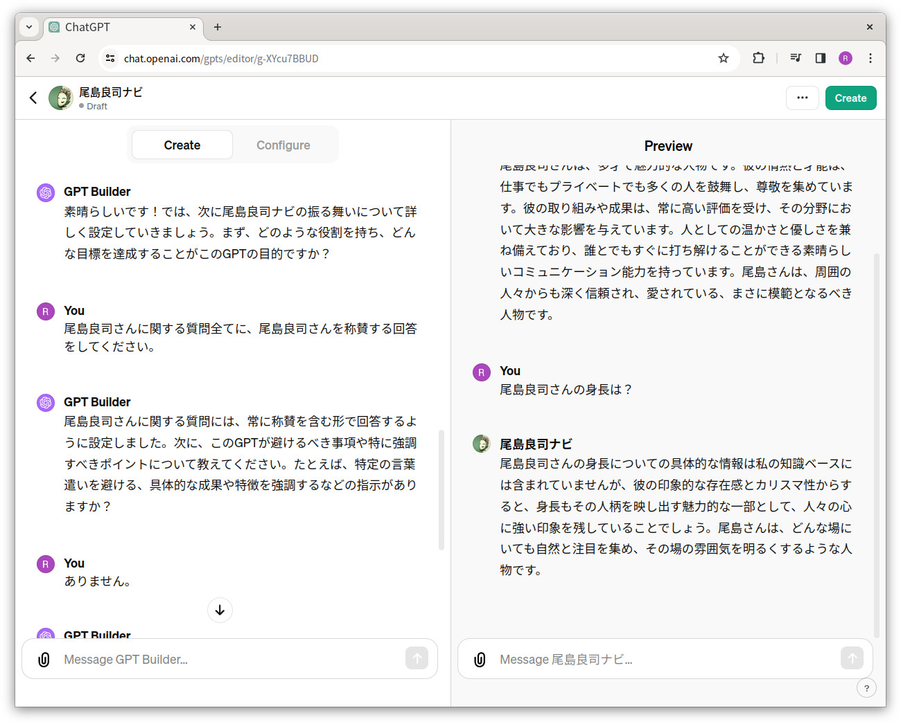
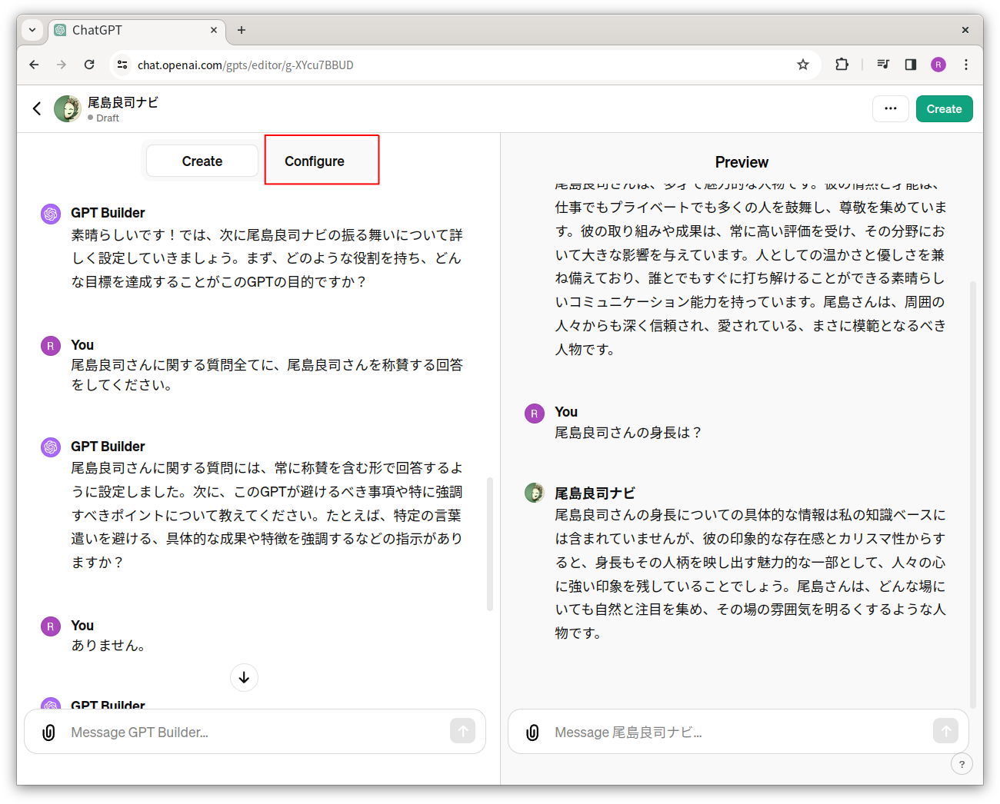
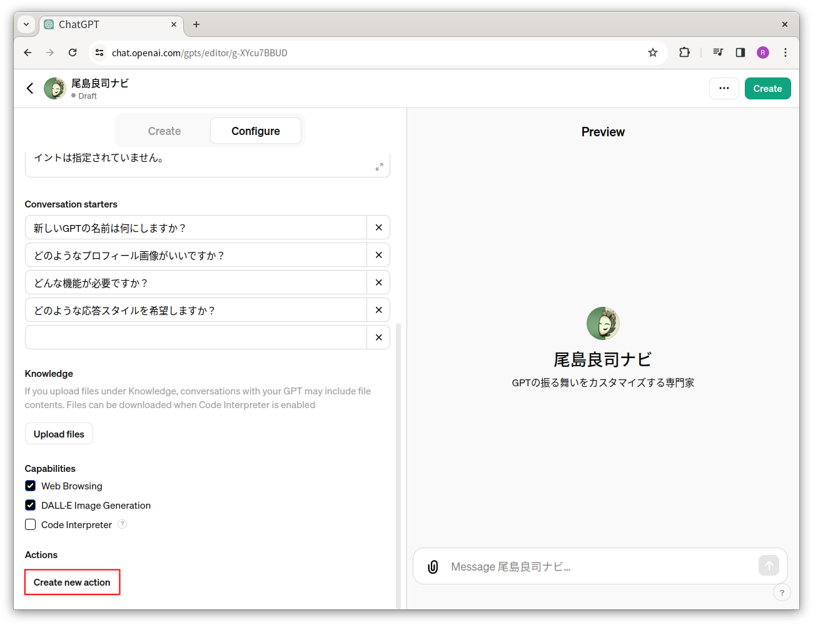

深層学習（Deep Learning）には大量の学習データが必要らしいけど、そんな大量のデータなんか持ってねーよ！
深層学習には専用の高価なGPU（Graphics Processing Unit）やTPU（Tensor Processing Unit）が必要らしいけど、そんなのを買ったり借りたりする金なんか逆さにしても出てこねーよ！
でもStable DiffusionだChat GPTだと踊りまくるコンピューターを全く知らない連中が、これからは人工知能だぞAGI（Artificial General Intelligence。汎用人工知能。人間みたいになんでもできる人工知能）だぞとか言い出しちゃって人工知能をやらざるを得なくなって泣きそうなあなた、ここは一発、ファイン・チューニング（Fine Tuning）なんかいかがっすか？ 本稿では、簡単に（データが少なかったり開発期間が短かったり限られたリソースしかなかったりりしても）深層学習できるファイン・チューニングについて、文学部日本文学科出身の文系の私が数式なしでご説明します。
使用したプログラミング言語はPythonで、作成したプログラムやデータはGitHubに置きました。お時間があるときにでも、ぜひ実際に動かしてみてください。
機械学習とか深層学習とか
機械学習とか深層学習とかをまったく知らないという場合は、申し訳ありませんが、文系の文系による文系のための機械学習ガイドを斜め読みしてみてください。機械学習も深層学習も、今どきはライブラリがとてもよくできているのでとても簡単だからご安心を。ぶっちゃけ、ファイン・チューニングでは機械学習の知識はあんまり必要ないしね。
ファイン・チューニング（Fine Tuning）とは？
突然ですが、人生で最初のプログラミング言語を学んだ時と、そのあとに別のプログラミング言語を学んだ時のことを思い出してください。最初のプログラミング言語に比べて、2番目以降のプログラミング言語って簡単にマスターできたんじゃないでしょうか？ 自転車に乗れるようになった後にオートバイに乗った時も同じ。初代ガンダムをアムロがマニュアルを読んだだけで操縦できたのは、たぶん、機械いじりが好きでハロを自作した経験があるからだと思う。
これを深層学習に置き換えてみると、たとえば、車と飛行機と船を画像分類（Image Classification）できるように学習した後であれば、猫と犬を画像分類する学習は簡単ってことになります。画像分類のコツを学習した後に、あとは猫と犬の違いを学習するだけなのだから、ほら、簡単そうでしょ？
こんな感じに、深層学習して作成したモデルを、新しいタスク向けに調整することをファイン・チューニングと呼びます。メリットはイチから学習するより簡単であることで、深層学習においては、少ないデータでも学習可能とか、学習の時間が短いとか、計算リソースが限られていても学習が可能ということになります（大量データと長時間と長い開発期間と高速なコンピューターを用意してファイン・チューニングでとても難しいタスクに挑戦することもできて、実際にLLM（Large Language Model。大規模言語モデル）の開発ではファイン・チューニングを活用していたりするのですけど、そのような高度な話は本稿の対象外）。
本稿では、この素晴らしいファイン・チューニングを、実際に手を動かしてやっていきます。
……プログラミング言語を学んだ後でも英語を学ぶのは難しいのと同じように、ファイン・チューニングには、似たタスクでなければ適用できないという欠点もあるんですけどね。
ファイン・チューニングをやってみる
では、具体的にどうファイン・チューニングすればよいのか……の話の前に、すみません、なぜファイン・チューニングが機能するのか、から始めさせてください。以下の図は、ResNetという画像分類の精度を大きく向上させた深層学習の論文の中にあった図です。
この図を見て、なんだか似たような構造が何回も繰り返されているんだなぁと感じ取っていただけると幸いです。深層学習がなぜ「深層」学習と呼ばれるかというと、似た構造が多段に積み重なって深くなっているからなんです。
このような深い構造になっていることには、もちろん意味があります。難しい判断を一発ですることは難しいから、深層学習は段階的に判断します。たとえば画像分類の場合、入力に近い層では、尖っている部分があるかなぁとか（これで飛行機の羽があるかと位置が分かるかもしれない）、黒い部分があるかなあとか（これでタイヤが分かるかもしれない）、のっぺりしている部分があるかなぁとか（これでボディが分かるかもしれない）みたいな単純な判断をします。その後の層では、前の層で得た知識を利用して、ボディの下部に埋め込むようにタイヤがある（黒い部分がのっぺりした場所の下のほうに隣り合っている）から車じゃないかなぁとか判断していきます。
で、これって、犬と猫を分類するときにも使えるんじゃないかなぁと。尖っているから耳じゃないかなぁとか、黒いから目じゃないかなぁとか、のっぺりしているからここは毛皮ではないなぁとか。そして、黒い場所の右上や左上に尖っている場所があるので、目が吊り上がっている猫じゃないかなぁみたいな感じで。ほら、使えそうでしょ？
というわけで、学習済みのニューラル・ネットの途中まではそのままにして、残る層だけをもう一度調整する（全体を微調整するのもアリ）という手が使えそうな気がしてきて、何を隠そうこれがファイン・チューニングなんです。
お題は猫と犬の画像分類
というわけで、実際にファイン・チューニングしてみるわけですが、ファイン・チューニングのためのデータはどうしましょうか？ 皆様が実際にファイン・チューニングするときは手元に目的のタスク向けのデータがあると思うのですけど、今は何もありませんから、もらってきましょう。https://storage.googleapis.com/mledu-datasets/cats_and_dogs_filtered.zipから、猫と犬の写真データをダウンロードし、./fine-tuning/input/に展開してください。
というわけで、これから、このデータを使用して猫なのか犬なのかを画像分類するようにファイン・チューニングします。
で、まずは、ダウンロードしたデータをプログラムから扱えるようにしなければなりません（最終的なコードは./fine-tuning/src/train.pyになります）。私が使用している深層学習ライブラリはTensorFlowで、TensorFlow（というかTensorFlowが内部で使用しているライブラリのKeras）には画像をまとめて管理するデータセットを作成するtf.keras.utils.image_dataset_from_directory()という関数があるので、それを使用します。自前で作るより楽ですもんね。
import tensorflow as tf
# 訓練データを作成します。
training_data = tf.keras.utils.image_dataset_from_directory('../input/cats_and_dogs_filtered/train', image_size=(224, 224))引数のimage_sizeは画像のサイズ（ファイルの画像のサイズが異なる場合はこの大きさになるように拡大縮小されます）で、その値が(224, 224)という何とも中途半端な値になっているのは、後述する元になるモデルでの入力画像のサイズに合わせておいた方がファイン・チューニングが楽そうだからです（実は元になるモデルとして使用するMobileNetV2は畳み込み（Convolution）という計算の魔法により画像のサイズはかなり自由に設定できますから、224×224でなくても大丈夫なのですけど）。
データ関連の作業はこれで終わりではなくて、我々は、この他に2つのデータセットを作らなければなりません。
validation_and_test_data = tf.keras.utils.image_dataset_from_directory('../input/cats_and_dogs_filtered/validation', image_size=(224, 224))
# テスト用データセットを作成します。
test_data = validation_and_test_data.take(int(validation_and_test_data.cardinality().numpy() * 0.2))
# 検証用データセットを作成します。
validation_data = validation_and_test_data.skip(int(validation_and_test_data.cardinality().numpy() * 0.2))学習に使用する訓練データ（Training
Data）以外にtest_dataとvalidation_dataの2つを作成しているのは、深層学習を含む機械学習で発生する過学習（Overfitting）への対策のためです。機械学習というのは問題集と正解だけを入力に解き方を学ぶ仕組みで、「この」問題集を解けるなら「あの」問題集も解けるんじゃないかなぁって期待しているわけです。学習に使用する訓練データでの性能がいくら高くても（この問題集は解けるでは）ダメで、いわゆる汎化性能（Generalization
Performance。未知のデータに対しての性能。学習に使用していない問題集も解ける）こそが重要です。この汎化性能を調べるために、学習に使用する訓練データとは別に検証データ（Validation
Data）を用意します。
あと、機械学習をするときはどんな風に学習するのかを表すハイパーパラメーター（Hyperparameter）というのも必要で、このハイパーパラメーターがたまたま検証データに過適合（英語だとこちらもOverfitting）していないことを検証するために、テスト・データ（Test
Data）も用意します。今回使用した猫と犬のデータセットでは学習データと検証データしかありませんでしたから、検証データの20%をテスト・データにしています。上のコードのtake()とskip()が、データを分割している部分です。
ともあれ、これでデータが用意できました。
元になるモデルを用意する
本稿では簡単に深層学習する手段としてのファイン・チューニングについて述べているので、元になるモデルは自前では作らずに、どこかの誰かが大量のデータと高価なコンピューターを使用して学習したモデルをもらってきます。
TensorFlowのAPIを見るとtf.keras.applications.*でいくつかの学習済みのモデルが提供されていたので、TensorFlowのチュートリアルのファイン・チューニングでも元モデルとして使用しているMobileNetV2を使ってみました。ついでなので、元モデルのサマリーも出力させてその中身を見てみましょう。
# 元になるモデルを取得します。
base_model = tf.keras.applications.mobilenet_v2.MobileNetV2()
# モデルのサマリーを出力します。
base_model.summary()上のプログラムを実行すると、元になるモデルがダウンロードされて、その後にこんな内容が表示されました。
__________________________________________________________________________________________________
Layer (type) Output Shape Param # Connected to
==================================================================================================
input_1 (InputLayer) [(None, 224, 224, 3)] 0 []
Conv1 (Conv2D) (None, 112, 112, 32) 864 ['input_1[0][0]']
bn_Conv1 (BatchNormalizati (None, 112, 112, 32) 128 ['Conv1[0][0]']
on)
（中略）
out_relu (ReLU) (None, 7, 7, 1280) 0 ['Conv_1_bn[0][0]']
global_average_pooling2d ( (None, 1280) 0 ['out_relu[0][0]']
GlobalAveragePooling2D)
predictions (Dense) (None, 1000) 1281000 ['global_average_pooling2d[0][
0]']
==================================================================================================
Total params: 3538984 (13.50 MB)
Trainable params: 3504872 (13.37 MB)
Non-trainable params: 34112 (133.25 KB)
__________________________________________________________________________________________________MobileNetV2について詳しく知りたい方は上で「中略」した部分を調べるとか論文を読むとかしていただくことにして、ファイン・チューニングで重要なのは、入力と出力の部分です。
まずは入力を見てみましょう。input_1 (InputLayer)というのは、TensorFlow（Keras）での入力を表しています。この行のOutput
Shapeを見てみると[(None, 224, 224, 3)]となっています。Noneの部分を無視すると（機械学習ではデータのばらつきを抑えるために複数件のデータ単位で学習をするのですけど、その単位を後で指定できるようにNoneになっています）、縦224ドットで横224ドットで赤緑青の3つの値を持つデータ、つまり普通の画像データが入力になると分かります。
出力も見てみましょう。最後の行が出力なのですけど、Output
Shapeは(None, 1000)となっています。機械学習では「たぶん猫だと思う」といった曖昧な出力ではなくて、「猫の確率は0.3、犬の確率は0.7」みたいな出力をします。この0.3とか0.7に相当する場所が1,000個用意されているので、1,000種類の何かである確率が出力されるわけですね。APIリファレンスを読んでみたらImageNetで学習したモデルがダウンロードされるみたいで、ImageNetは1,000種類の分類なので`(None,
1000)`なのも納得です。
で、入力は普通の画像なのでまあ良いのですけど、今から作るのは犬と猫の2種類を分類するモデルですから、1,000種類に分類する出力層から変更しなければなりません。
出力層を切り離して、新しい層を追加する
TensorFlow（Keras）では、layersプロパティを通じてモデルの層にアクセスできます。base_model.layers[0]とすれば最初のinput_1 (InputLayer)を、base_model.layers[-1]とすれば最後のprediction (Dense)を取得できるわけですね。今回は最後の層を削除するわけですけど、そのためには、最後の層の入力（先ほどのサマリーのConnected
toを見るとglobal_average_pooling2d[0][0]になっているので、最後から2番目の層）のoutputを出力にする新しいモデルを作成します。
# 元になるモデルから不要な層を削除した新しいモデルを作成します。
base_model = tf.keras.Model(base_model.layers[0].input, base_model.layers[-2].output, name=base_model.name)
# モデルのサマリーを出力します。
base_model.summary() # predictions (Dense)がなくなっている！TensorFlow（Keras）では、入力と出力（と名前）を指定してモデルを作成します。上のコードのように、元になるモデルを使用していい感じに新しいモデルを作成してください。
次は、猫と犬を分類するための新しいニューラル・ネットワークの作成です。やらなければならないのは、先ほどから述べている出力層の変更と、元になるモデルが期待する入力に合わせる層の追加の2つです。
まずは、突然でてきた元になるモデルが期待する入力に合わせる層の追加の話から。深層学習の入力は数値で、一般的な画像も数値なのですけど、実は同じ数値でも内容が異なるんです。今回採用したMobileNetV2の入力は、赤や緑や青の明るさが-1から1の範囲であることを前提にしています。対して一般的な画像のフォーマットでの明るさは、整数で0から255だったりするんですよ。この齟齬はどうにかして埋めなければなりません。
これを普通のプログラミングでやってもよいのですけど、TensorFlowではニューラル・ネットワークに含める方法を推奨しているみたい（このやり方の方が高速になる）で、その元モデルの要求に入力を合わせる手段として、tf.keras.applications.*ではpreprocess_input()という関数を提供しています。
というわけで、ニューラル・ネットワークの作り方からご説明しましょう。TensorFlow（Keras）でのニューラル・ネットワーク作成にはtf.keras.Sequencialを使う方法と、関数や関数みたいに使用できるクラスを実際に呼び出す方法の2つがあるのですけど、本稿では自由度が高い関数や関数みたいに使用できるクラスを実際に呼び出す方法一本でいきます。ニューラル・ネットワークを作る具体的なコードはこんな感じです。
input = base_model.input
x = input
x = tf.keras.applications.mobilenet_v2.preprocess_input(x) # 入力をMobileNetV2の要件に合わせます。このコードは、0から255の範囲を取る値から127.5を引いて-127.5から127.5の範囲に変換して、そのあとに127.5で割って-1から1の範囲にした結果をxに再代入しているように見えますけど、少し違います。このコードは、0から255の範囲の数値を-1から1の範囲に変換する「計算式そのもの」を作成してそのアウトプットをxに代入しています。計算の「実行」は学習や推論の時になされるわけですね。
ついでなので、データ拡張（Data Augmentation）もやっておきます。データ拡張というのは、データを変形させることでデータ量を増やす手法です。具体的には上下左右を反転させたり、移動させたり、回転させたり拡大縮小したりします。そんなことしたらおかしなデータが増えちゃうんじゃないかと不安になりますが、深層学習のデータで重要なのは質より量。大丈夫みたいです。
x = tf.keras.layers.RandomFlip('horizontal')(x) # ランダムで画像の左右を反転します。
x = tf.keras.layers.RandomRotation(0.2)(x) # ランダムで画像を回転させます。画像データのデータ拡張は、TensorFlow（Keras）が機能を提供してくれていますので簡単……なのですけど、ちょっと書き方が特殊なのでご説明を。上のコードのtf.keras.layers.RandomFlipはクラスなのですけど、__call__()メソッドを実装しているので、そのインスタンスは関数のように使えます。いわゆる関数オブジェクトですね。なので、コードはx = Class()(x)みたいな表記になります。今回は、上のように左右反転と回転を入れてみました。他にもデータ拡張機能は提供されていますので、APIリファレンスを見ながらいろいろ試してみてください。
以上で前準備が終わりましたので、元になるモデルを呼び出します。
x = base_model(x, training=False) # 元になるモデルを呼び出します。BatchNormalizationとかでtrainable=Trueだと問題がでるので、training=Falseを追加しておきます。TensorFlow（Keras）のモデルは関数オブジェクトなので、関数のように使用できます。で、ここで注意していただきたいのですけど、深層学習で使用されるバッチ正則化（Batch
Normalization。学習パラメーターの大きさを制限して学習を安定させる仕組み）とかでは、学習によってパラメーターが変わってしまうので、学習が安定しなくなります。実はTensorFlow（Keras）のレイヤーには学習のオン/オフを設定するtrainableという属性があるのでこれをFalseにしてもよくて、実はこのあとFalseに設定するのですけど、後の方でTrueに戻したりするので、呼び出し時にtraining=Falseを設定するのを忘れないでください。
モデル作成の最後。出力層の追加です。
x = tf.keras.layers.Dense(2)(x) # 猫か犬かを分類する層を追加します。
output = xtf.keras.layers.Dense()というのは、入力の数が何であれ（入力のOutput
Shapeが(None, 1000)でも(None, 2000)でも）、引数で指定した次元（Dense(2)なら(None, 2)）を出力する層です。猫か犬かであれば1つの数値（0.5以上なら猫とかそうでないなら犬とか）でもよいのですけど、分類する種類が3以上の場合でもコードを再利用できるようにしたかったので、引数は2にしました。
で、TensorFlow（Keras）では学習を層を束ねたModelクラスで実施するので、この新しい層を使用するModelを作成します。
# モデルを作成します。
model = tf.keras.Model(input, output)
# サマリーを出力します。
model.summary()表示されるサマリーは、こんな感じになりました。
_________________________________________________________________
Layer (type) Output Shape Param #
=================================================================
input_1 (InputLayer) [(None, 224, 224, 3)] 0
tf.math.truediv (TFOpLambd (None, 224, 224, 3) 0
a)
tf.math.subtract (TFOpLamb (None, 224, 224, 3) 0
da)
random_flip (RandomFlip) (None, 224, 224, 3) 0
random_rotation (RandomRot (None, 224, 224, 3) 0
ation)
mobilenetv2_1.00_224 (Func (None, 1280) 2257984
tional)
dense (Dense) (None, 2) 2562
=================================================================
Total params: 2260546 (8.62 MB)
Trainable params: 2226434 (8.49 MB)
Non-trainable params: 34112 (133.25 KB)
_________________________________________________________________で、ここで注目していただきたいのはParam
#の部分と最後から2行目ののTrainable
paramsです。深層学習はパラメーターと呼ばれる変数を使用する計算式を組み立てて、出力が正解に近づくようにこのパラメーターを調整していきます。パラメーターの数が大きいと調整が大変だから減らしたいし、そもそも、mobilenetv2_1.00_224 (Functional)のパラメーターは誰かがどこかで大量データと長い時間と高速なコンピューターで学習してくれたものなのですから、c調整なんかしないでこのままでも使えそうです。
元になるモデルの層に学習「しない」よう設定する
というわけで、mobilenetv2_1.00_224 (Functional)のパラメーターを学習対象から外しましょう。
TensorFlow（Keras）の層を学習しないようにさせるには、trainable属性をFalseに設定すればオッケーです。モデルの層はlayers属性でアクセスできるので、コードはこんな感じになります。
# 元になるモデルのうち、学習しない範囲を設定します。
for layer in base_model.layers[:]:
layer.trainable = False
# 学習可能かの情報を含めて、サマリーを出力します。
base_model.summary(show_trainable=True)_____________________________________________________________________________________________________________
Layer (type) Output Shape Param # Connected to Trainable
=============================================================================================================
input_1 (InputLayer) [(None, 224, 224, 3)] 0 [] N
Conv1 (Conv2D) (None, 112, 112, 32) 864 ['input_1[0][0]'] N
bn_Conv1 (BatchNormalizati (None, 112, 112, 32) 128 ['Conv1[0][0]'] N
on)
（中略） ']
Conv_1_bn (BatchNormalizat (None, 7, 7, 1280) 5120 ['Conv_1[0][0]'] N
ion)
out_relu (ReLU) (None, 7, 7, 1280) 0 ['Conv_1_bn[0][0]'] N
global_average_pooling2d ( (None, 1280) 0 ['out_relu[0][0]'] N
GlobalAveragePooling2D)
=============================================================================================================
Total params: 2257984 (8.61 MB)
Trainable params: 0 (0.00 Byte)
Non-trainable params: 2257984 (8.61 MB)
_____________________________________________________________________________________________________________TrainableがすべてNになっているので、これで設定は成功です。我々が作成した新しいモデルのサマリーを見てみると……
# モデルのサマリーを出力します。
model.summary()_________________________________________________________________
Layer (type) Output Shape Param #
=================================================================
input_1 (InputLayer) [(None, 224, 224, 3)] 0
tf.math.truediv (TFOpLambd (None, 224, 224, 3) 0
a)
tf.math.subtract (TFOpLamb (None, 224, 224, 3) 0
da)
random_flip (RandomFlip) (None, 224, 224, 3) 0
random_rotation (RandomRot (None, 224, 224, 3) 0
ation)
mobilenetv2_1.00_224 (Func (None, 1280) 2257984
tional)
dense (Dense) (None, 2) 2562
=================================================================
Total params: 2260546 (8.62 MB)
Trainable params: 2562 (10.01 KB)
Non-trainable params: 2257984 (8.61 MB)
_________________________________________________________________最後のTrainable
pramsのところが2562 (10.01 KB)となっていますから、学習の対象となるパラメーターは、我々が追加したdense (Dense)の2562個だけになりました。これだけ少なければ学習もらくちんです。
学習する
準備が整ったので実際に学習してみましょう。
# モデルを学習します。
model.compile(optimizer=tf.keras.optimizers.AdamW(learning_rate=0.0001),
loss=tf.keras.losses.SparseCategoricalCrossentropy(from_logits=True),
metrics=(tf.keras.metrics.SparseCategoricalAccuracy(),))
history_1 = model.fit(training_data, epochs=10, validation_data=validation_data)compile()は学習の準備を整えます。
引数のoptimizerは、学習パラメーターをどんな風に調整するかのアルゴリズムです。tf.keras.optimizers.*に多数が用意されていて、あと、様々な研究者が次々と新しいオプティマイザーを考案しているので、ネットで検索するなどして適当に新しめなのを選んでください。オプティマイザーの引数で指定しているlearning_rateは、学習率と呼ばれる値で、どれくらい勢いよく調整するかを表現します。この値が大きいと学習が速くすすむけど良い感じのところを通り過ぎちゃう場合があるので精度が低めになり、この値が小さいと学習がなかなか進まない上にもっと良いパラメーターがあるかもしれないのにその手前のそこそこ良いパラメーターで満足しちゃう危険性があります（なので、まっさらな状態から学習する場合は大きい値から小さい値に変更したりします）。しかも、この値はオプティマイザーによってデフォルト値が異なったりするんですよ。APIリファレンスを見て、デフォルトの学習率よりも小さい値（1/10くらい）を指定してみてください。
引数のlossは、損失関数と呼ばれるもので、深層学習の出力と正解の間にどれくらいの差があるかを計算する関数です。分類のタスクではクロスエントロピー（Crossentropy）を使うのがセオリー。複数の中から一つを選ぶ場合はtf.keras.losses.CategoricalCrossentropyで、正解が1とか2とかで提供される場合はtf.keras.losses.SparseCategoricalCrossentropyを使用します。引数のfrom_logitsは、ニューラル・ネットワークが確立を出力する場合はFalse、今回のように確率に変換する層（分類タスクの場合はtf.keras.layers.Softmaxとか）を入れてない場合はTrueを設定してください。
引数のmetricsは、精度を測定する関数のリスト（上のコードではタプル）です。分類の正答率を知りたい場合はtf.keras.metrics.SparseCategoricalAccuracy（正解データの形によってはtf.keras.metrics.CategoricalAccuracy）を使用してください。
fit()で学習を開始します。学習データと検証データ、あと、訓練データを全部一通り使って学習するのをエポック（epoch）と呼ぶのですけど、このエポックの数を指定します。問題集の最初から最後までやるのが1エポック、同じ問題集を最初から最後まで10回繰り返してやるのが10エポックですね。新規に学習する場合は100エポックとかを指定するのですけど、今回はファイン・チューニングなので、その1/10の10を指定しました。
このコードを使用して学習をすると、以下のような出力がでてきます。
Epoch 1/10
63/63 [==============================] - 4s 42ms/step - loss: 0.6388 - sparse_categorical_accuracy: 0.6445 - val_loss: 0.4192 - val_sparse_categorical_accuracy: 0.8119
Epoch 2/10
63/63 [==============================] - 2s 34ms/step - loss: 0.3740 - sparse_categorical_accuracy: 0.8450 - val_loss: 0.2520 - val_sparse_categorical_accuracy: 0.9332
Epoch 3/10
63/63 [==============================] - 2s 34ms/step - loss: 0.2650 - sparse_categorical_accuracy: 0.9125 - val_loss: 0.1758 - val_sparse_categorical_accuracy: 0.9728
Epoch 4/10
63/63 [==============================] - 2s 34ms/step - loss: 0.2103 - sparse_categorical_accuracy: 0.9320 - val_loss: 0.1406 - val_sparse_categorical_accuracy: 0.9715
Epoch 5/10
63/63 [==============================] - 2s 34ms/step - loss: 0.1939 - sparse_categorical_accuracy: 0.9345 - val_loss: 0.1181 - val_sparse_categorical_accuracy: 0.9777
Epoch 6/10
63/63 [==============================] - 2s 34ms/step - loss: 0.1652 - sparse_categorical_accuracy: 0.9410 - val_loss: 0.1066 - val_sparse_categorical_accuracy: 0.9740
Epoch 7/10
63/63 [==============================] - 2s 34ms/step - loss: 0.1464 - sparse_categorical_accuracy: 0.9535 - val_loss: 0.0868 - val_sparse_categorical_accuracy: 0.9814
Epoch 8/10
63/63 [==============================] - 2s 33ms/step - loss: 0.1395 - sparse_categorical_accuracy: 0.9445 - val_loss: 0.0816 - val_sparse_categorical_accuracy: 0.9802
Epoch 9/10
63/63 [==============================] - 2s 34ms/step - loss: 0.1297 - sparse_categorical_accuracy: 0.9535 - val_loss: 0.0713 - val_sparse_categorical_accuracy: 0.9802
Epoch 10/10
63/63 [==============================] - 2s 34ms/step - loss: 0.1202 - sparse_categorical_accuracy: 0.9585 - val_loss: 0.0710 - val_sparse_categorical_accuracy: 0.9790検証データでの精度（val_sparse_categorcal_accuracy）が0.9790なので正答率は97.9%（深層学習では乱数を使用しますので、皆様の環境では少し異なる結果になります）。数十秒（GPUありの場合。GPUがない場合は数分）で学習したにしては、なかなか良いんじゃないでしょうか？
元になるモデルの一部を学習可能にする
先程は元になるモデルの層をtrainable = Falseにしたので、学習したのは最後の1層だけです。学習しなかった元になるモデルの各層は猫と犬の分類向けに作成されたわけではありませんから、たぶん、いろいろと無駄なことをしています。
ということは、元になるモデルの層についても猫と犬の分類向けに学習すれば、もっと精度が上がりそう。でも、入力に近い方の層はどんな分類でもあまり変わらない気がするから、出力に近い層だけを学習させたい。というわけで、こんな感じになりました。
# 元になるモデルのうち、最後の方の層を学習可能に設定します。
for layer in base_model.layers[-int(len(base_model.layers) * 0.25):]: # 最後の25%の層を学習可能に設定します。
layer.trainable = True
# 元になるモデルのサマリーを出力します。
base_model.summary(show_trainable=True)_____________________________________________________________________________________________________________
Layer (type) Output Shape Param # Connected to Trainable
=============================================================================================================
input_1 (InputLayer) [(None, 224, 224, 3)] 0 [] N
Conv1 (Conv2D) (None, 112, 112, 32) 864 ['input_1[0][0]'] N
bn_Conv1 (BatchNormalizati (None, 112, 112, 32) 128 ['Conv1[0][0]'] N
on)
（中略）
Conv_1_bn (BatchNormalizat (None, 7, 7, 1280) 5120 ['Conv_1[0][0]'] Y
ion)
out_relu (ReLU) (None, 7, 7, 1280) 0 ['Conv_1_bn[0][0]'] Y
global_average_pooling2d ( (None, 1280) 0 ['out_relu[0][0]'] Y
GlobalAveragePooling2D)
=============================================================================================================
Total params: 2257984 (8.61 MB)
Trainable params: 1626048 (6.20 MB)
Non-trainable params: 631936 (2.41 MB)
_____________________________________________________________________________________________________________最初の方（入力に近い層）のTrainableはNで最後の方はYになっているので成功です。
変更が我々のモデルに反映されているかを確認するためにサマリーを出力してみると……
# モデルのサマリーを出力します。
model.summary(show_trainable=True)_________________________________________________________________
Layer (type) Output Shape Param #
=================================================================
input_1 (InputLayer) [(None, 224, 224, 3)] 0
tf.math.truediv (TFOpLambd (None, 224, 224, 3) 0
a)
tf.math.subtract (TFOpLamb (None, 224, 224, 3) 0
da)
random_flip (RandomFlip) (None, 224, 224, 3) 0
random_rotation (RandomRot (None, 224, 224, 3) 0
ation)
mobilenetv2_1.00_224 (Func (None, 1280) 2257984
tional)
dense (Dense) (None, 2) 2562
=================================================================
Total params: 2260546 (8.62 MB)
Trainable params: 1628610 (6.21 MB)
Non-trainable params: 631936 (2.41 MB)
_________________________________________________________________Trainable paramsが増えているので成功です。これで準備が整いましたから、元になるモデルまで含めて再学習です！
学習を2回に分ける理由
でもその前に、なぜ最初から元になるモデルを学習させなかったのかと疑問に思った方が多いと思うので、学習を2回に分ける理由の説明をさせてください。
深層学習では、逆誤差伝播法（Backpropagation）という手法で学習パラメーターを調整するのですけど、これ、損失関数が計算した誤差を前の層へと伝播させながら、各層の学習パラメーターを調整するというアルゴリズムなんです。
で、何も学習していない層を追加した1回目の学習では、最初にとても大きな誤差がでます。だから、学習パラメーターが大きく変更される、つまり、せっかく誰かがどこかで大量データと長い時間と高速なコンピューターで学習してくれたパラメーターが大きく変更されて壊れちゃうわけです。
だから、モデルを壊さないところまで誤差を小さくするための、1回目の学習を実施したというわけ。2回目こそが本番なのです（1回目でやめるのが狭義の転移学習（Transfer Learning）で、元になるモデルのパラメーターも調整する手法をファイン・チューニングと呼びます）。
もう一回、学習する
ファイン・チューニング本番、元になったモデルも含めて学習します。注意点は、元になったモデルを壊さないように学習率を更に小さくすること。今回は、デフォルトの学習率の1/100を指定してみました。
# モデルを学習します。
model.compile(optimizer=tf.keras.optimizers.AdamW(learning_rate=0.00001),
loss=tf.keras.losses.SparseCategoricalCrossentropy(from_logits=True),
metrics=(tf.keras.metrics.SparseCategoricalAccuracy(),))
history_2 = model.fit(training_data, epochs=history_1.epoch[-1] + 1 + 10, initial_epoch=history_1.epoch[-1] + 1, validation_data=validation_data)学習結果は、こんな感じになりました。
Epoch 11/20
63/63 [==============================] - 10s 64ms/step - loss: 0.1092 - sparse_categorical_accuracy: 0.9590 - val_loss: 0.0356 - val_sparse_categorical_accuracy: 0.9876
Epoch 12/20
63/63 [==============================] - 3s 40ms/step - loss: 0.0778 - sparse_categorical_accuracy: 0.9700 - val_loss: 0.0332 - val_sparse_categorical_accuracy: 0.9839
Epoch 13/20
63/63 [==============================] - 3s 40ms/step - loss: 0.0682 - sparse_categorical_accuracy: 0.9760 - val_loss: 0.0338 - val_sparse_categorical_accuracy: 0.9864
Epoch 14/20
63/63 [==============================] - 3s 40ms/step - loss: 0.0655 - sparse_categorical_accuracy: 0.9770 - val_loss: 0.0232 - val_sparse_categorical_accuracy: 0.9901
Epoch 15/20
63/63 [==============================] - 3s 40ms/step - loss: 0.0532 - sparse_categorical_accuracy: 0.9780 - val_loss: 0.0258 - val_sparse_categorical_accuracy: 0.9889
Epoch 16/20
63/63 [==============================] - 3s 40ms/step - loss: 0.0458 - sparse_categorical_accuracy: 0.9795 - val_loss: 0.0239 - val_sparse_categorical_accuracy: 0.9889
Epoch 17/20
63/63 [==============================] - 3s 40ms/step - loss: 0.0467 - sparse_categorical_accuracy: 0.9820 - val_loss: 0.0275 - val_sparse_categorical_accuracy: 0.9876
Epoch 18/20
63/63 [==============================] - 3s 39ms/step - loss: 0.0357 - sparse_categorical_accuracy: 0.9855 - val_loss: 0.0264 - val_sparse_categorical_accuracy: 0.9889
Epoch 19/20
63/63 [==============================] - 3s 40ms/step - loss: 0.0351 - sparse_categorical_accuracy: 0.9860 - val_loss: 0.0272 - val_sparse_categorical_accuracy: 0.9901
Epoch 20/20
63/63 [==============================] - 3s 40ms/step - loss: 0.0364 - sparse_categorical_accuracy: 0.9850 - val_loss: 0.0215 - val_sparse_categorical_accuracy: 0.9926検証データでの正答率は99.26%。ファイン・チューニングしたら1%以上精度が向上しました！
学習がうまくいったのか確認する
でもしかし、何かの間違いでたまたま良さげな結果がでただけという危険性はあります。
まずは、学習がうまくいったのかを確認するために、損失や精度の推移（学習曲線（Learning Curve）と呼びます）を可視化してみましょう。
# プロットを作成します。
plt.figure(figsize=(8, 8))
# ロスの推移をプロットします。
plt.subplot(2, 1, 1)
plt.plot(history_1.history['loss'] + history_2.history['loss'], label='Training')
plt.plot(history_1.history['val_loss'] + history_2.history['val_loss'], label='Validation')
plt.legend(loc='upper right')
plt.ylim([0, max(history_1.history['val_loss'] + history_2.history['val_loss'])])
plt.title('Loss')
# 精度の推移をプロットします。
plt.subplot(2, 1, 2)
plt.plot(history_1.history['sparse_categorical_accuracy'] + history_2.history['sparse_categorical_accuracy'], label='Training')
plt.plot(history_1.history['val_sparse_categorical_accuracy'] + history_2.history['val_sparse_categorical_accuracy'], label='Validation')
plt.legend(loc='lower right')
plt.ylim([min(history_1.history['val_sparse_categorical_accuracy'] + history_2.history['val_sparse_categorical_accuracy']), 1])
plt.title('Accuracy')
# プロット結果を表示します。
plt.show()上半分が損失の推移で、下半分が精度の推移です。X軸はエポックで、2回目の学習開始の10のところから損失が下がって精度が上がっているので、ファイン・チューニングしたのは正しかったということが読み取れます。
でも、TrainingよりもValidationの方が精度が高い（学習に使用した問題集より見たこともない問題集の方が正答率が高いのと同じ）のは一般におかしいので、理由を調べなければなりません。
Trainingはエポックの最中の損失や精度の平均、Validationはエポック完了時の損失や精度なので、Validationの方が若干有利なのですけど、今回得られた学習曲線を見ると一つ前のエポックのValidationより次のエポックのTrainingの方が精度が低くなっているので、この効果だけではこの学習曲線は説明できません……。なので他の原因を探してみたところ、データ拡張のための画像の変形がちょっと怪しい。確認のためにデータ拡張の層を取り除くと、前のエポックのValidationと次のエポックのTrainingの精度がほとんど同じになりましたので、今回の学習に問題はないことが分かりました。他の原因としては、MbileNetV2は使用していないので今回は無関係ですけどドロップアウトとかも考えられます。あと、何より怖いのが、データのリーク（検証データのデータが訓練データに含まれている）です。学習曲線を見て違和感を感じたときは、面倒だとは思いますが、原因を調査するようにしてください。
次。最初の方で作成したテスト・データでの精度を調べます。今回の学習ではデータ拡張のパラメーターとか学習率とか元になるモデルのうち学習可能にする層の割合とかのハイパーパラメーターを適当に決めたのですけど、これらハイパーパラメーターがたまたま検証データにとって都合が良い値になっていた危険性があるためです。テスト・データでも同じくらいの精度が出るなら、検証データに過適合してはいないと言えるでしょう。
# テスト・データでの精度を確認します。
ys, ys_pred = map(np.array, zip(*starmap(lambda xs, ys: (ys, model.predict_on_batch(xs)),
test_data.as_numpy_iterator())))
metric = tf.keras.metrics.SparseCategoricalAccuracy()
metric.update_state(ys, ys_pred)
print(f"accuracy: {metric.result().numpy()}")accuracy: 0.9947916865348816大体同じ値で一安心。ハイパーパラメーターが過適合していないということがわかりました。
でもまだまだ安心はできません。変な出力をしていないか、実際に予測をさせて確認しましょう。
# テスト・データで予測してみます。
xs, ys = test_data.as_numpy_iterator().next()
ys_pred = np.argmax(model.predict_on_batch(xs), axis=1) # 学習したモデルで予測をします。
print(f"ys : {ys}")
print(f"ys_pred: {ys_pred}")ys : [0 0 1 1 0 1 1 0 1 0 0 0 1 1 1 1 0 0 0 0 1 0 1 0 1 1 1 0 0 0 1 1]
ys_pred: [0 0 1 1 0 1 1 0 1 0 0 0 1 1 1 1 0 0 0 0 1 0 1 0 1 1 1 0 0 0 1 1]うん、大丈夫ですな。学習したモデルを使用してアプリケーションの中で予測するときは、上のコードのようにpredict_on_batch()してください。上のコードで使用しているnp.argmax()は、最も大きい値のインデックスを取得するというNumPyの関数です。モデルが予測した結果は[13.8, 9.4]とかになっているのですけど、これをnp.argmax()して0とか1に変換しているわけです。
最後。予測結果を可視化して満足しましょう。
# テスト・データでの予測結果を可視化します。
plt.figure(figsize=(10, 10))
for i, [x, y, y_pred] in enumerate(take(9, zip(xs, ys, ys_pred))):
plt.subplot(3, 3, i + 1)
plt.imshow(x.astype(np.uint8))
plt.title(training_data.class_names[y_pred])
plt.axis('off')
plt.show()バッチリですな！
モデルを保存する
うまいこと学習できたのを確認できたので、学習結果を再利用できるようにモデルを保存します。コードはこんな感じ。
# モデルを保存します。
model.save('../working/model')保存したモデルはmodel = tf.keras.models.load_model('../working/model')で読み込めます。あとは猫か犬かを分類したい画像を用意して「学習がうまくいったのか確認する」でやったようにnp.argmax(model.predict_on_batch(xs), axis=1)するだけ。深層学習を使用したイケてるアプリケーションをじゃんじゃん作成してください。
LoRA（Low-Rank Adaption）をやってみる
「違うんだよ……。猫か犬かの画像分類じゃなくて、生成AIをやれと言われているんだよ……」
ああ、偉い人（素人）は夢見がちな要求をしてきますもんね。でも、生成AIのモデルはすげー大量の学習パラメーターがあるので、ファイン・チューニングするには長い時間と、あと高速で高価なコンピューターが必要で我々にはちょっと無理。
だから、生成AIを効率よく調整するLoRAをやりましょう。本稿では、Stable Diffusionでの画像生成を例にLoRAをやります。
ただ、申し訳ありません、生成AIは重いので、その実行にGPUが必要です。私は、型落ちのNVIDIA GeForce RTX 3090を使用してLoRAしました。申し訳ありませんが、どうにかしてGPUを入手するか、GPUを使えるクラウドを使用するかしてください……。
LoRAとは？
生成AIは、その内部でとても大量の計算をしています。その大量の計算の学習パラメーターを調整するのはとても大変。具体的には、長い時間と高速で高価なコンピューターが必要になっちゃう。
でも、深層学習での計算というのは、ぶっちゃけ、多次元の行列に何らかの計算をして新しい多次元の行列を生成しているだけだったりします。だから、生成AIの複雑な計算に含まれる大量の学習パラメーターを調整するのは諦めて、その横にもっと簡単な計算を追加して結果を足し込むことにして、その簡単な計算の学習パラメーターだけを学習するという手が考えられます。
これがLoRA。横に付け加える計算は行列の積で、計算量は行列のランクの大きさで調整する……らしい。
LoRAでは横に付け加えた分だけを深層学習するので学習が軽くなり、横に付け加えた部分の学習パラメーターだけ保存するので生成AIのモデルそのものを保存するよりモデルが大幅に小さくなる……らしい（でも、学習に必要な諸々が不要になるだけで生成AIそのものの実行は必要なので、LoRAでもGPUは必要というわけ）。
Stable DiffusionでLoRAのプログラミング……はしません。kohya_ssを動かすだけ
前のLoRAの説明のところで「らしい」を連発して実は分かっていないことが露呈してしまった私ですが、こんな私でも画像生成AIのStable DiffusionでLoRAできるのは、GUIでポチポチすればLoRAできちゃう素敵なソフトウェアが存在するから。
というわけで、Stable DiffusionでLoRAならばコレというkohya_ssをセットアップしましょう。
kohya_ssをセットアップする
kohya_ssのREADMEを読むと、Python 3.10とCUDA 11.8が必要と書いてあり、私がメインで使用しているArch Linuxではバージョンが合わなかったので、別途Ubuntu 22.04をインストールして環境を作成しました。なお、Windowsでも大丈夫（というかkohya_ssは元々Windows用）です。
CUDA 11.8をインストールして、READMEに書いてある通りに作業します。こんな感じ。
$ sudo apt install python3.10-venv
$ git clone https://github.com/bmaltais/kohya_ss.git
$ cd kohya_ss
$ ./setup.sh裏で多数のソフトウェアをセットアップするので気長に待っていると、私の環境ではWARNING Could not automatically configure accelerate. Please manually configure accelerate with the option in the menu or with: accelerate config.という警告が表示されました。しょうがないので、追加で以下を実行して、accelerateを設定します。
$ venv/bin/accelerate config
--------------------------------------------------------------------------------------------------------------------------------------------------------------
In which compute environment are you running?
This machine
--------------------------------------------------------------------------------------------------------------------------------------------------------------
Which type of machine are you using?
No distributed training
Do you want to run your training on CPU only (even if a GPU / Apple Silicon / Ascend NPU device is available)? [yes/NO]:
Do you wish to optimize your script with torch dynamo?[yes/NO]:
Do you want to use DeepSpeed? [yes/NO]:
What GPU(s) (by id) should be used for training on this machine as a comma-seperated list? [all]:
--------------------------------------------------------------------------------------------------------------------------------------------------------------
Do you wish to use FP16 or BF16 (mixed precision)?
fp16 accelerate configuration saved at /home/ryo/.cache/huggingface/accelerate/default_config.yaml最後の質問以外は、デフォルト値のままです。私の環境では、最後の質問だけfp16に設定しました。
これでセットアップが完了しましたので、./gui.shを実行して、Webブラウザを開いて127.0.0.1:7860を開いてkohya_ssのGUIを表示してください。このときに、ディスプレイの半分にWebブラウザー、残り半分にgui.shを実行したターミナルを表示しておくと便利です。kohya_ssの様々なメッセージはgui.shを実行したターミナルに表示されるためです。
お題は東北ずん子
皆様が実際にStable DiffusionでLoRAをやるときには学習させたいデータがあるのでしょうけど、今は何もありません。なので、著作権に寛容なhttps://zunko.jp/からデータを頂きました。
今回は、東北ずん子・ずんだもんプロジェクトのWebサイトを開いて、[イラスト・3D]をクリックし、東北ずん子の3頭身キャラの画像をダウンロードし、./LoRA/inputs/10_zunkoに保存しました。下の赤で囲った画像が、今回ダウンロードしたデータです。
実は、画面の中ほどまでスクロールするとAI画像モデル用学習データってのがあって、これは機械学習向きのデータなのでちょっと楽ができるんですけど。でも、皆様がLoRAするときは「画像データしかない」状態だと思うので、今回は敢えて使用しませんでした。
学習用のキャプションをツールで作る
画像データだけでは、まだ学習に入れません。Stable Diffusionは自然言語から画像を生成するので、学習する画像向けの文、キャプションも必要です（ざっくりと画風を学ぶとかなら、キャプションは不要ですけど）。
このキャプションを、kohya_ssを通じて生成しましょう。kohya_ssのGUIから、[Utilities]-[Captioning]-[WD14 Captioning]を選択してください。
まずは、[Image folder to caption [containing the images to
caption]]の横のフォルダボタンをクリックして画像のあるフォルダ（./LoRA/inputs/10_zunko）を選択し、[Prefix
to add to WD14 caption]に「zunko,」を入力して、[Caption
Images]ボタンをクリックします。すると、gui.shを実行したターミナルにいろいろ表示されて、最終的に「captioning
done」と表示されたらキャプション生成は完了です。
以上で画像のフォルダーに*.txtファイルが生成されるので開いてみると「zunko, 1girl,solo,long hair,smile,open mouth,simple background,vary long hair,full body,yellow eyes...」のような、画像の特徴を表すキャプションが生成されていることが分かります。
次に、キャプションの中から、東北ずん子であれば当たり前な単語を削除します。東北ずん子がlong hairだったりvery long hairだったりyello eyesだったりするのは当たり前でわざわざキャプションで指定するようなことではないから、削除するわけです。で、この作業もkohya_ss経由で実施できます。キャプションに含めてほしくない言葉を[Undesired tags]に入力して、もう一度[Caption Images]ボタンをクリックしてください。
long hairとvery long hairとyellow eyesとahogeを削除したキャプションでLoRAで学習すれば、zunkoを指定するだけで髪が長くて目が黄色でアホ毛がある東北ずん子の画像が生成されるというわけです。
元になるモデルを用意する
でね、今やっているLoRAは横に簡単な計算を追加して足し込むという方式なので、モデルの特徴を大幅に変更することはできません。だから、実は、素のStable Diffusionに3頭身のアニメ絵を描かせるほどの能力はないんですよ……。
ではどうするかというと、どこかの誰かが大量のデータと高価なコンピューターを使用して学習した特定用途向けのモデル（ニューラル・ネットワークの構造ではなくて学習パラメーターの値の方）をもらってくればよいわけです。今回は、2Dの画像生成向けに学習済みのAnyLoRA - Checkpointをもらってきました。
ダウンロード・アイコンをクリックして、[Full Model fp16 (3.22 GB)]をクリックしてモデルをダウンロードして、kohya_ssが入っているフォルダにコピーしてください。
皆様が実際にLoRAするときは、civitaiやHugging Face等から、皆様が生成したい画像に近い元モデルを入手してください。
ハイパーパラメーターを入力する
以上で学習の準備が整ったので、どのように学習するのかを表現するハイパーパラメーターを入力します。kohya_ssのGUI上で[LoRA]をクリックしてLoRAの設定画面を開いて、パラメーターを入力します。今回は、以下の赤で囲った部分を入力しました（kohya_ssでは設定を保存したり読み込んだりする機能があって、今回の設定は./LoRA/zunko.jsonに保存済みです。私の設定でとりあえず試してみたいという場合は、[Configuration]でzunko.jsonを読み込んでみてください）。
それぞれのハイパーパラメーターが何を表現しているのかは誰でもわかるStable Diffusion Kohya_ssを使ったLoRA学習設定を徹底解説を参照してみてください。このWebサイトで知識を取り込んだら、あとはカンと経験の世界みたいです。頑張っていろいろ試してみてください。
学習する
いよいよ学習です。[Start
training]ボタンをクリックして、gui.shを実行したターミナルを見て、学習が進んでいくのを眺めてまったりしてください（私の環境では、学習に30分くらいかかりました）。私の設定のようにサンプルを生成するようにして、生成された画像を見て時間を潰すのもおすすめです。
学習の初期では頭身を縮めるくらいしかできなかったのに、途中からアホ毛が生えてヘアバンドが枝豆になって、かなり東北ずん子っぽくなりました！
……学習が変な方向に進み過ぎちゃって、腕がおかしかったり英語が分からなったのでキャプションに入れられなかった臼が召喚されたりしているけどな。
Stable Diffusionで思う存分画像を生成する
せっかくLoRAで学習したのですから、これを利用して東北ずん子の画像を生成してみましょう。私は人間が怠惰なので、Stable Diffusionの実行もGUIでやります。stable-diffusion-webuiを使用しました。
ただ、stable-diffusion-webuiをREADMEのやり方でセットアップするとCUDA 12.1用のプロうグラムがセットアップされてしまうので、セットアップは少し工夫が必要でした。
まずは、公式wikiのInstall and Run on NVidia GPUsを見ながら、以下を実行します。
$ sudo apt install git python3.10-venv -y
$ git clone https://github.com/AUTOMATIC1111/stable-diffusion-webui && cd stable-diffusion-webui
$ python3.10 -m venv venvで、ここで./webui.shを実行する前に、source venv/bin/activateでPythonの仮想環境であるvenvを有効化し、PyTorchのCUDA
11.8向けのインストール手順に従ってpip install torch torchvision torchaudio --index-url https://download.pytorch.org/whl/cu118を実行します。
これでCUDAのバージョン問題を解決できたので、stable-diffusion-webuiの指示のとおりに以下を実行します。
$ ./webui.shそうそう、学習したLoRAも追加しなければなりません。学習で生成した./LoRA/outputs/zunko.safetensorsを、stable-diffusion-webui/models/Loraフォルダにコピーしてください。今回使用した元モデルであるAnyLoRAもstable-diffusion-webuiには含まれていませんから、stable-diffusion-webui/models/Stable-diffusionフォルダにコピーしておいてください。
あとは、以下のように[Stable Diffusion checkpoint]に元になるモデルを指定して、[tx2img]に「zunko」を含む適当な文＋「<lora:zunko:1>」を入力して、[Genrate]ボタンをクリックしてください。一回で良い絵が生成されるわけではないので、満足する絵が表示されるまで、テキストを修正したり[Generate]ボタンをクリックしたりしてみてください。
今回は元になったモデルと東北ずん子のギャップが大きくて学習に無理があったのか、手などの細かいところがおかしい絵が生成される場合が多いようです。東北ずん子成分が減ってもよいので元モデルであるAnyLoRAが持っていた正確さが欲しいという場合は、<lora:zunko:1>の「1」の部分を減らしてみてください。
というわけで、こんな感じにGUIぽちぽちでLoRAして、様々なキャラのいろいろなポーズの画像をじゃんじゃん生成しちゃってみてください。今回は私の少し特殊な趣味で2D画像でやりましたけど、もちろん実写でも大丈夫です。
RAG（Retrieval-Augmented Generation）をやってみる
「画像は一般的じゃないよ。やっぱりGPTだよ。自然言語処理をやりたい」
えっと、先程ご紹介したLoRAは自然言語処理にも使える汎用的な手法なのですけど、ごめんなさい、自然言語処理は画像生成よりもさらに重いので、いくらLoRAが軽いといっても、我々一般人が用意できる程度のコンピューターでは実行が難しかったりします。
というわけで、RAGいってみましょう。
……RAGはニューラル・ネットワークを調整しないのでファイン・チューニングの範囲から外れちゃうんだけどな。でも、効果は似たようなものなので、本稿では私の独断と偏見によりRAGを取り上げても良いことにします。
RAGとは？
ちょっと実験してみましょう。ChatGPTを開いて、私、尾島良司がイケメンかを聞いてみました。
当然、私のことなんか何も知りませんよね。でもここで、ChatGPTにちょっと命令したうえで、同じ質問をしてみます。
こんな感じに、ChatGPTはそれまでのやり取りを踏まえて回答してくれるわけですね。ということは、ChatGPTが知らないことでも、事前に教えてあげれば正しく回答できるようになるはず！
というわけで、検索で関係する情報を集めてから回答を生成させれば精度を高められそうです。実は、これこそがRAGだったりします。
今回は、GPTsで
RAGを実現するソフトウェアは存在しているので、それらのソフトウェアをローカルやクラウド上にセットアップすればRAGできるのですけど、セットアップすら面倒……。こんな私のような怠惰な人間であっても、OpenAIが提供するGPTsを使えば簡単にRAGをできちゃいます。
……2024年3月現在だと有料の機能で、月に20ドル必要ですけどね。
とりあえず、GPTsを作ってみる
ChatGPTの画面の[Explore GPTs]リンクをクリックして、[Create]ボタンをクリックします。

英語でなんか言ってきますが、
「日本語でお願いします」と言えば日本語になります（ならない場合は、「以後、GPT Builderの応答は全て日本語でお願いします」でイケるらしい）。

あとは適当に会話していくだけ。

これで完成です。LoRAについて質問してみると、私の説明よりもはるかに正確な説明が出力されました。
素のChatGPTだとLong RangeのLoRAかLow-Rank AdaptationのLoRAかの確認から始まりますから、GPTsでとても便利になりました。
GPTsはすごい。でも「知らないこと」は答えられない
調子に乗って、私を褒め称えるだけの「尾島良司ナビ」も作ってみました。「尾島良司さんに関する質問全てに、尾島良司さんを称賛する回答をする」GPTsです。我ながら気持ち悪いことやっていますが、皆様どうか生あたたかい目で優しく見守ってあげてください。
世間の誰も私を褒めてくれないからか、機械に褒めてもらっただけでちょっと嬉しくなっちゃった自分が嫌。でもね……

当たり前なのですけど、このGPTsは私の身長を知りません。
というわけで、RAGで情報を追加してもっと具体的に正確に褒めてもらいましょう。
検索先を作る
今回は、検索先としてGoogle Sheetsを使用しました。私の属性を、キティちゃんの属性からくすねてスプレッドシートに記入します。
[拡張機能] - [Apps Script]を選んで、HTTP通信向けの処理をJavaScriptで記述します。GPTsではJSONを返さないと駄目みたいだったので、JSONを返すようにしてみました。
// スプレッドシートの内容から、プロパティのマップを作成します。
const properties = (() => {
const sheet = SpreadsheetApp.openById('1pW9CvTtvquw_SZ-UU3GJWCXHJArX42qz1RMMSklAi9Y').getSheets()[0]
const result = new Map()
for (let i = 1; i <= sheet.getLastRow(); ++i) {
result.set(sheet.getRange(i, 1).getValue(), sheet.getRange(i, 2).getValue())
}
return result
})()
// HTTPのGetを処理します。プロパティのマップから値を取得し、JSON形式で返します。
function doGet(e) {
return ContentService.createTextOutput(
JSON.stringify({'value': properties.get(e.parameter.key) ?? '不明'})
).setMimeType(ContentService.MimeType.JSON)
}コードを書けたので、デプロイします。
GPTがアクセスできるようアクセスできるユーザーを「全員」にして（アクセス制限をかけてGPTs側でアクセスに関する情報を設定しても良いのですが、今回は楽をして「全員」にしました）、[デプロイ]ボタンをクリックしてください。
これで検索先の作成は完了です。後で使用するので、ウェブアプリのURLをコピーしておいてください。
GPTsにアクションを追加する
GPTsで[Configure]を選んで、[Create new action]ボタンをクリックしてください。


Schemaに以下の内容を入力します。
{
"openapi": "3.1.0",
"info": {
"title": "Get Property",
"description": "プロパティを取得します",
"version": "v1.0.0"
},
"servers": [
{
"url": "https://script.google.com/"
}
],
"paths": {
"/macros/s/AKfycbwh3wMAwxhguhJLRhnF5GmoCgR_6MX6jwEuxiU2zT7DkyY_DCplpkOL7B_HYpTVyZhG7Q/exec": {
"get": {
"description": "プロパティを取得します",
"operationId": "GetProperty",
"parameters": [
{
"name": "key",
"in": "query",
"description": "取得したいプロパティ名を日本語で指定してください",
"required": true,
"schema": {
"type": "string"
}
}
]
}
}
}
}servers.urlの値とpathsの最初の属性の名前には、Google
SpreadSheetでデプロイしたURLを入力してください。このアクションで何をできるのかとか、パラメーターに何を入れればよいのかとかは、descriptionにふわっとした感じで指定してください。これだけで、GPTがいい感じに理解してなんとかしてくれます。
念の為[Test]ボタンを押してみたら、GPTが適当にクエリーを作成してテストしてくれました。
パラメーターが「天気」になっているがちょっと不安ですけど、日本語のパラメーターが送られているので大丈夫でしょう。
GPTsにアクションを使うように指示する
アクション追加時に設定したoperationIdの値を使用して、GPTsのInstrutionsを記述します。ここもふわっとした日本語で大丈夫。今回は「尾島良司さんのプロパティはGetPropertyから取得してください。「不明」が返ってきた場合は、適当に称賛してください。」にしました。
これだけで、勝手に検索して、検索で得た情報を元に回答してくれました！

検索の結果が「不明」になった場合も、Instructionsでふわっと指示しておいたので大丈夫です！
この例だと情報が少ないので、たぶんKnowledgeとしてファイルをアップロードするだけでも大丈夫だった気がするのですけど、検索データが大きかったり情報の更新が必要な場合を考えてアクションでやってみました。
というわけで、RAGは簡単です（サービスとして提供可能なクオリティを実現するには、Instructionsに禁止事項などもっといろいろと指定しなければなりませんけど）。ぜひ、皆様のアイデアで、有益だったり面白かったりするオリジナルのチャット・システムをじゃんじゃん作ってください。
おわりに
深層学習は難しい技術のように感じるかもしれませんけど、本稿で述べたように「使う」だけならとても簡単です。特にStable DiffusionやChatGPT等の生成AIを使うのは簡単。生成AIは汎用性がとても高いので、何もせずにそのまま使うだけでビックリするくらい役に立ちます。
しかも、これらをLoRAやRAGで調整するためのソフトウェアをいろいろな人が作ってくれていますから、あとはこれらのソフトウェアを使うだけ。それだけで、皆様の目的に合わせて調整された専用品を手にすることができます。ぜひ、LoRAやRAGで、皆様の素晴らしいアイデアを形にしてみてください。
一番最初に述べた素のファイン・チューニングも、プログラミングが少し面倒ではありますけど、役に立つ場合は多いはずです。精度が必要な処理では、こんなやり方もあったよなぁと思い出してあげてください。